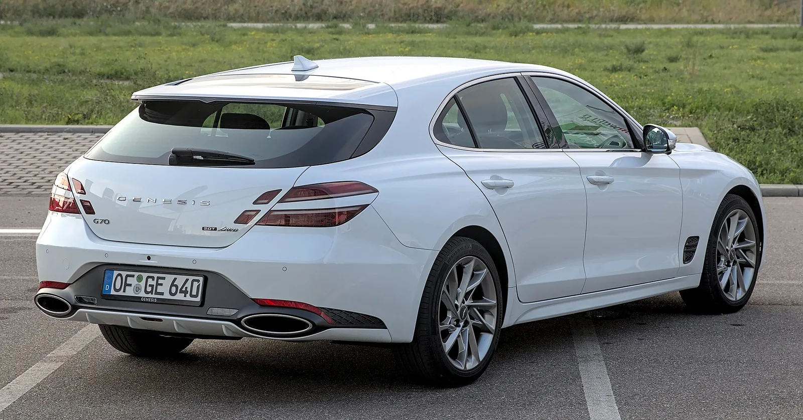

▲ G70. 2027년형에서 V6가 빠질 것으로 보인다 ⓒ Wikimedia Commons
G70에서 가장 좋은 엔진이 빠질 것으로 보입니다.
3.3리터 트윈터보 V6입니다. 365마력, 376lb-ft. 이 자리를 2.5리터 터보 4기통(300마력, 311lb-ft)이 혼자 채웁니다.
제조사가 라인업을 단순화하는 시점은 대체로 정해져 있습니다. 그 모델을 접기 직전입니다.
1. 무엇이 사라지나
| 구분 | 3.3L 트윈터보 V6 | 2.5L 터보 4기통 |
|---|---|---|
| 최고출력 | 365마력 (가변배기 368마력) | 300마력 |
| 최대토크 | 376lb-ft (509Nm) | 311lb-ft (421Nm) |
| 2027년형 | 단종 전망 | 유일한 선택 |
65마력 차이는 숫자보다 크게 느껴집니다. 배기량과 기통 수가 함께 줄어들기 때문입니다.
| 항목 | V6 | 직렬 4기통 |
|---|---|---|
| 진동 | 본질적으로 적다 — 뱅크가 나뉘어 상쇄된다 | 2차 진동이 남는다 |
| 소리 | 고회전에서 층이 생긴다 | 단조롭다 |
| 토크 곡선 | 넓고 평탄 | 중저속에 몰린다 |
| 무게 | 무겁다 — 앞 하중 증가 | 가볍다 |
스포츠 세단에서 V6가 갖는 의미는 출력만이 아닙니다. G70이 BMW 3시리즈와 겨루겠다고 나섰을 때, 3.3T는 그 주장의 근거였습니다.
2. 라인업 단순화라는 신호
Carscoops는 이 변화를 "단종 직전에 흔히 나오는 방식"으로 해석했습니다.
| 단계 | 내용 |
|---|---|
| 1 | 파워트레인 선택지 축소 — 상위 엔진부터 사라진다 |
| 2 | 트림 통합 — 개별 옵션이 패키지로 묶인다 |
| 3 | 색상·휠 선택지 감소 |
| 4 | 마케팅 예산 축소 |
| 5 | 단종 발표 |
이유는 재고와 인증 비용입니다. 엔진 하나를 유지하려면 배출가스·연비 인증을 계속 갱신해야 하고, 부품 공급망도 따로 굴려야 합니다. 판매 대수가 적으면 이 비용을 회수할 수 없습니다.
보도는 닛산 알티마를 유사 사례로 들었습니다. 닛산도 알티마를 정리하기 전에 파워트레인을 먼저 줄였습니다.

▲ G70은 뉘르부르크링 트랙 택시에도 투입되며 스포츠 세단 성격을 강조해 왔다
3. 9년 동안 왜 자리를 못 잡았나
G70은 2017년에 나왔습니다. 제네시스 브랜드의 막내이자 유일한 후륜 기반 스포츠 세단입니다.
평가는 나쁘지 않았습니다. 미국 매체들의 비교평가에서 3시리즈·C클래스와 대등하다는 결과가 여러 차례 나왔습니다.
| 요인 | 내용 |
|---|---|
| 세그먼트 축소 | 콤팩트 스포츠 세단 시장 자체가 SUV로 이동 |
| 브랜드 인지도 | 이 체급 구매층은 엠블럼을 중시한다 |
| 내부 경쟁 | 같은 값에 GV70이 있다 — 제네시스 미국 판매의 SUV 비중은 61.5% |
| 실내 공간 | 동급에서 뒷좌석이 좁은 편 |
세 번째 항목이 결정적입니다. 제네시스는 미국에서 GV70과 GV80 두 차종이 누적 판매의 약 59%를 차지합니다. 같은 브랜드 안에서 SUV가 세단 수요를 흡수하고 있습니다.
4. 국산 세단이 동시에 정리되고 있다
| 모델 | 상황 |
|---|---|
| 제네시스 G70 | V6 단종 전망, 2027년이 마지막일 수 있다 |
| 기아 K9 | 2026년 12월 단산설 — 기아는 공식 부인. 상반기 734대 |
| 제네시스 G90 | 부분변경 진행 중 — 유지 |
두 모델의 성격은 다르지만 원인은 같습니다. 고배기량 세단 수요가 구조적으로 줄고 있습니다.
다만 방향에는 차이가 있습니다. K9은 후속 없이 접히는 쪽으로 알려졌고, G70은 파워트레인만 줄여 연장하는 단계입니다. 전동화 후속으로 이어질 여지가 남아 있습니다.

▲ G70 슈팅 브레이크. 유럽 전용으로 나왔던 왜건 파생형이다
5. 국내 차주와 구매 검토자에게
| 대상 | 내용 |
|---|---|
| 3.3T 구매 검토 중 | 국내 판매 지속 여부는 미확정 — 보도는 미국 서류 기준 |
| 현재 3.3T 보유 | 단종 시 중고 시세는 희소성으로 방어될 수 있다 |
| 2.5T 검토 중 | 300마력은 동급에서 부족한 수치가 아니다 |
| 부품·정비 | 단종되더라도 부품 공급 의무 기간이 적용된다 |
이번 보도는 미국 시장 서류를 근거로 합니다. 국내 판매 사양의 변경 여부는 별도로 확인해야 합니다.

▲ 제네시스 세단 라인업에서 G70만 파워트레인 축소가 거론되고 있다
6. 정리
2027년형 제네시스 G70에서 3.3리터 트윈터보 V6가 빠질 것으로 보입니다. EPA·NHTSA 서류를 근거로 한 보도입니다.
365마력·376lb-ft가 사라지고 2.5리터 터보 4기통 300마력·311lb-ft만 남습니다. 출력 차는 65마력입니다.
Car and Driver는 2027년이 G70의 마지막 판매 연도가 될 수 있다고 봤습니다. 9년간 생산했지만 뚜렷한 시장 존재감을 만들지 못했다는 평가입니다. 국내 판매 사양 변경 여부는 확인되지 않았습니다.